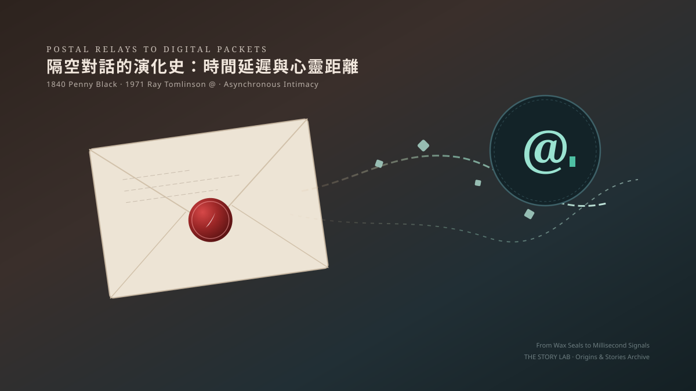
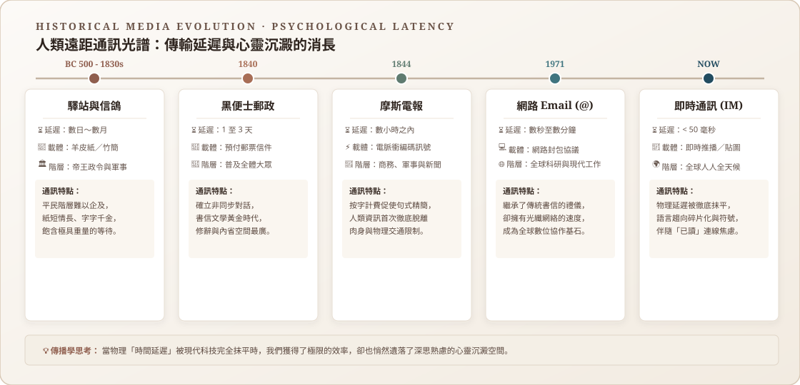

從驛站、郵票到電子郵件：我們是如何學會「隔空對話」的？
跨越時空的媒介演化史：時間延遲、非同步書寫與現代連線焦慮的心理變奏

在今天，只要動動拇指，一則訊息或一封電子郵件便能在幾十毫秒內橫跨大洋，精準送達地球另一端的螢幕上。如果對方在五分鐘內沒有回覆，我們甚至會感到莫名的焦慮。然而，在人類文明的大部分歲月裡，「與不在身邊的人說話」是一項昂貴、凶險且曠日持久的奢求。我們究竟是如何從馬蹄聲碎的古老驛道，一步步走到今天全天候在線的數位世界的？而當通訊的「時間延遲」被徹底消滅時，我們究竟獲得了什麼，又悄悄遺落了什麼？
馬蹄與烽煙：權力專屬的古老驛道
在文字發明之後的數千年裡，信息傳遞的速度受限於生物的物理奔跑極限。古代帝國為了維持廣袤疆域的統治，紛紛建立了接力式的驛站系統。
西元前 5 世紀，波斯帝國的大流士一世修建了橫跨近三千公里的「波斯御道（Royal Road）」。希臘歷史學家希羅多德在《歷史》中留下了對波斯驛騎著名的讚詞：「無論是降雪、大雨、酷熱，還是漫漫長夜，都無法阻止這些信使以最快速度完成既定的賽程。」（這段話日後甚至被刻在紐約曼哈頓總郵局的石樑上）。在東方，漢唐帝國則發展出龐大嚴密的「郵、亭、驛」網絡，「一騎紅塵妃子笑，無人知是荔枝來」生動勾勒出快馬更換、日馳數百里的極限物流。
然而，這些令人驚嘆的國家基礎設施，與普通百姓的生活毫無關聯。在漫長的中古時期，民間若想寄送一封家書，只能託付給雲遊四方的僧侶、行商，或者花費重金雇傭私人腳伕。一封信往往在路上顛簸數月，甚至在兵荒馬亂中永遠石沉大海。
黑便士奇蹟：1840 年，書信走入尋常百姓家
直到 19 世紀初，即便是在完成工業革命的日不落帝國英國，寄信依然是一件讓人頭疼的奢侈事。當時的英國郵政制度極其畸形：費用由收件人支付，且計費標準繁瑣荒謬——信件必須按行經的距離、過境的郡縣，以及信紙的「張數」累加計費。
當時寄一封跨城信件的費用，常相當於一個普通紡織工人整整一天的工資。許多貧寒家庭根本無力支付郵費，只能無奈拒收信件。社會上甚至出現了各種密碼逃費暗號：寄件人在信封外觀畫上特定符號（例如打個叉代表全家平安），收件人在郵差面前看一眼便佯稱沒錢拒收，以此白嫖通信。
看到體制荒誕的英國教育家兼改革家羅蘭·希爾（Rowland Hill），在 1837 年發表了一本震撼社會的小冊子《郵政改革：其重要性與可行性》（Post Office Reform: Its Importance and Practicability）。他提出了一個在當時被視為天方夜譚的激進構想：
「全國均一低資費，並由寄件人預付費用。」
1840 年 5 月 6 日，在希爾的極力推動下，世界上第一枚附有背膠的標準郵票——印有維多利亞女王側顏的「黑便士（Penny Black）」正式發行。只要貼上一枚售價僅 1 便士的黑便士，半盎司以下的信件就能寄往英國全境任何一個角落。
這場改革引發了前所未有的民主化資訊爆發。僅僅二十年間，英國每年的郵件投遞量從不到八千萬封暴增至數十億封。工匠、女傭、漂泊在外的學徒，第一次能夠負擔得起與家人互通音訊。黑便士不僅奠定了現代萬國郵政的架構，更催生了 19 世紀維多利亞時代輝煌燦爛的「書信文學黃金年代」。
【媒介光譜】傳輸速度 vs 沉澱空間：非同步溝通的演進
通訊媒介的每一次躍遷，都在重塑人類的思維架構與人際親密度：

電報（Telegraph 1844）：摩斯密碼將信息轉換為電脈衝，人類通訊第一次脫離了肉身與車輪的限制。但由於「按字計費」的昂貴成本，語言被極端壓縮成「母病速歸」式的精鍊短語，優美的修辭讓位給冷酷的效率。
電子郵件（Email 1971）：巧妙地融合了兩者的優點——它完整繼承了傳統書信的尊嚴結構（主旨、稱謂、正文、結尾敬語、署名），卻借由光纖網絡賦予了它近乎瞬時送達的光速。
數位新紀元：1971 年鍵盤上的孤獨「@」
當時間來到 20 世紀下半葉，電腦科學家們在五角大廈資助的阿帕網（ARPANET，網際網路的前身）上探索節點互聯。當時的電腦主要用於分時運算，同一個終端機上的不同使用者可以互留文字留言，但沒有人想過如何在兩台互相獨立的主機之間傳送文字。
1971 年末，任職於麻省劍橋 BBN 科技公司的電腦工程師雷·湯姆林森（Ray Tomlinson），在兩台透過 ARPANET 相連的 PDP-10 電腦之間進行實驗。他修改了內部傳輸程式（SNDMSG）與文件傳輸協議（CPYNET），成功將一段文字從一台機器推送到了另一台機器。
在設計信箱地址格式時，湯姆林森面臨一個難題：如何讓程式清楚區分「哪一部分是收件人名字，哪一部分是他所在的電腦主機？」
他目光掃過 Model 33 電傳打字機鍵盤，看到了一個當時極少被程式員使用、源自中古會計帳簿中表示「單價（at the rate of）」的冷門標點符號——@。
湯姆林森將其賦予了全新的意義：user@host，代表「某人在某台機器上」。這個簡潔而極富邏輯的微小決定，成為整個網際網路時代最具辨識度的文化符號。多年後當記者問他第一封電子郵件的內容究竟寫了什麼時，湯姆林森笑著坦承他早已忘記：「大概只是一些隨手敲下的測試字母，像是 QWERTYUIOP 之類的東西吧。」
延遲的消逝：當「已讀」成為當代焦慮
回望這部跨越兩千年的隔空對話史，技術的進步無疑是令人振奮的：我們終於徹底粉碎了地理的阻隔。然而，傳播學家與心理學家卻也在此刻發出了深刻的省思。
在傳統書信的時代，「時間延遲（Latency）」並不是一種技術缺陷，而是一段珍貴的心靈緩衝區。在等待郵差敲門的漫長數日或數週裡，收信人有充分的時間反覆咀嚼字裡行間的情緒；寫信人也必須在落筆前字斟句酌、深思熟慮，因為你無法收回一封已經投入郵筒的信。這種「非同步的私密性」，催生了人類情感中最深邃、最真摯的思念與靈魂交流。
而今天，當即時通訊軟體將延遲壓縮為零，「已讀不回」成為人際關係的心理負擔；隨時在線的工作群組打破了工作與生活的邊界。當說話變得太容易、太廉價，我們的語言反而變得無比破碎與輕浮——成堆的表情貼圖、斷裂的單句，取代了長篇的心靈對白。
我們學會了光速通訊，卻似乎正在遺忘如何真正地與另一個人對話。
電子郵件與即時通訊是偉大的發明，它們賦予了全球協作前所未有的效率。但偶爾，在某個不被打擾的安靜午後，我們或許可以試著關閉推播通知，不再要求立刻得到回應。給予對話一點「時間延遲」，讓思緒在空氣中沉澱、發酵。畢竟，人與人之間最深邃的共鳴，從來不是信號抵達的速率，而是字句背後那顆願意為你停留、沉思的心。